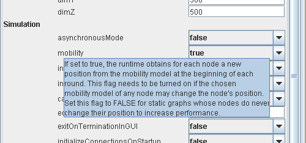

Sinalgo - Simulator for Network Algorithms |
|
|
|
Framework and Project ConfigurationFor each simulation, the framework needs to be set up correctly to implement the desired behavior. This section describes the tools that Sinalgo provides to configure the framework and your projects.In a nutshell, the entire configuration is done through the config.xml file, that is located in the root folder of each project. This file contains information on how the framework should run, as well as project specific settings. The file has the following structure:
<Document>
<Framework>
......
</Framework>
<Custom>
</Document>
......
</Custom>
The <Framework> tag encloses the framework specific settings, whereas the <Custom> tag contains project specific settings. You may edit the config.xml directly in your favorite text or XML editor. Alternatively, you can start Sinalgo without specifying the project with the -project flag. In the latter case, Sinalgo opens a project selection window, which shows the available projects. After selecting a project from the list, the Configuration tab on the right shows the content of the corresponding configuration file and lets you edit the entries. Framework ConfigurationThrough the configuration of the framework you can specify the size of the deployment area, the dimension of the deployment area (2D or 3D), whether the simulation is synchronous or asynchronous, and many other settings. These settings are available through public member variables of the class sinalgo.configuration.Configuration.When Sinalgo loads a project, it parses the configuration file of the
project to determine the settings that should be used. Enclosed in
the <Framework> tag, it expects to
find entries of the form <memberName value="....">
where memberName is the name of a member variable of sinalgo.configuration.Configuration, and the attribute value the value (as a string) that should be assigned to the member variable. Note: When modifying the configuration file through the project selector, you can get a description of the entries by pointing the mouse on the corresponding field.  Implementation Note: The member variables of sinalgo.configuration.Configuration are overwritten by the entries contained in the configuration file. Therefore, you may not modify these member variables in the source code to modify the settings of Sinalgo. Instead, change the values in the project specific configuration file. Project ConfigurationIn contrast to the predefined framework configuration, the project specific configuration is enclosed in the <Custom> tag and may contain arbitrary (but still valid XML) content. Upon loading the project, Sinalgo also parses the project specific settings and stores the information in a lookup table.All settings are assumed to be specified through tag attributes in the following way:
<Custom>
<Node size="80" visible="true" speed="0.8" value="1"/>
</Custom>
<Node2 value="0"/> <MobileNode speed="23.22">
<Name value="speedy"/>
</MobilityModel><Type kind="fast" color="red"/> <A value="aval">
<B value="bval">
<A/>
<C a="1" b="2" c="3">
<B/>
<D e="abc"/>
<C/>
For each attribute, the key for the lookup table is composed by concatenating the names of all parental tag-names and the name of the attribute, separated by slashes. Exception: If the name of the attribute is value, the key only consists of the concatenated parental tag-names. The example above would result in a lookup table with the following content:
Accessing the Project ConfigurationThe lookup table containing the project specific configuration is stored in sinalgo.configuration.Configuration. This class provides the following set of static methods to retrieve these config entries. Note that all of these methods are case insensitive.
Required Project Configuration EntriesThe following configuration entries are needed in the <Custom> section, unless you completely redefine the behavior of the framework. (Of course, you may change the values assigned to the properties.)
<Node defaultSize="10"/>
<GeometricNodeCollection rMax="150"/> The Node/defaultSize entry specifies how large network nodes should be painted on the GUI. The GeometricNodeCollection/rMax declares the maximum transmission range of any node in the simulation. Refer to the Sinalgo Architecture section for more details about the geometric node collection. Depending on the models you use (e.g. from the defaultProject), further entries are needed to configure the models. Refer to the documentation of the models for detailed information; the Model Implementation section of this tutorial also gives some information for most models provided in the defaultProject. Overwriting or Adding Config Entries on the Command LineAs described in the Execution section of this tutorial, the -overwrite command line argument can be used to overwrite settings from the configuration file. This may be handy to write a script to run several simulations with a set of slightly different settings without chaning the configuration file manually.The syntax is -overwrite key=value (key=value)*. The key is either the name of a framework configuration setting (which is case sensitive), or the key of a project setting (which is case insensitive). If the command line parser finds a framework setting associated with the key, it assigns the specified value. Otherwise, the project setting with the corresponding key is updated to have the new value. If the key neither points to a framework setting, nor to a project setting, a new key/value pair is added to the lookup table of the project configuration. Example: The following command line argument sets several framework settings (mobility, interference, dimX, dimY, and dimZ), as well as two project specific settings (GeometricNodeCollection/rMax, Node/defaultSize).
-overwrite mobility=false interference=true
dimX=1000 dimY=250 dimZ=800 GeometricNodeCollection/rMax=80
Node/defaultSize=10
|
|||||||||||||||||||||||||||||||||||||||||||||||||||||||||||||
© Distributed Computing Group 

|